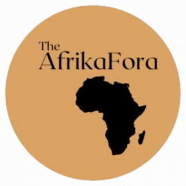
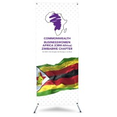
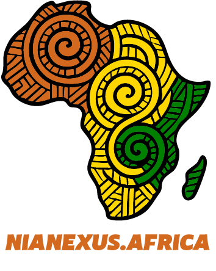
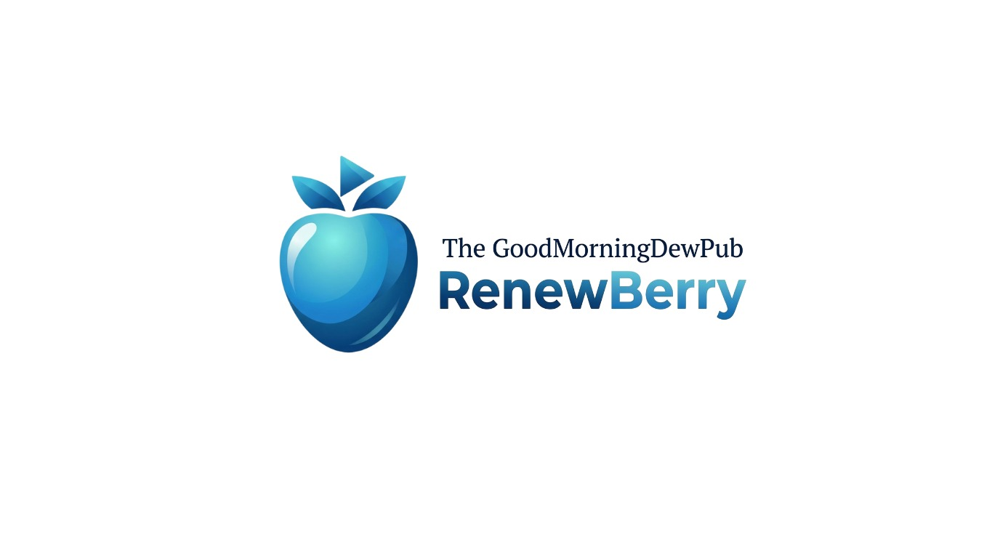
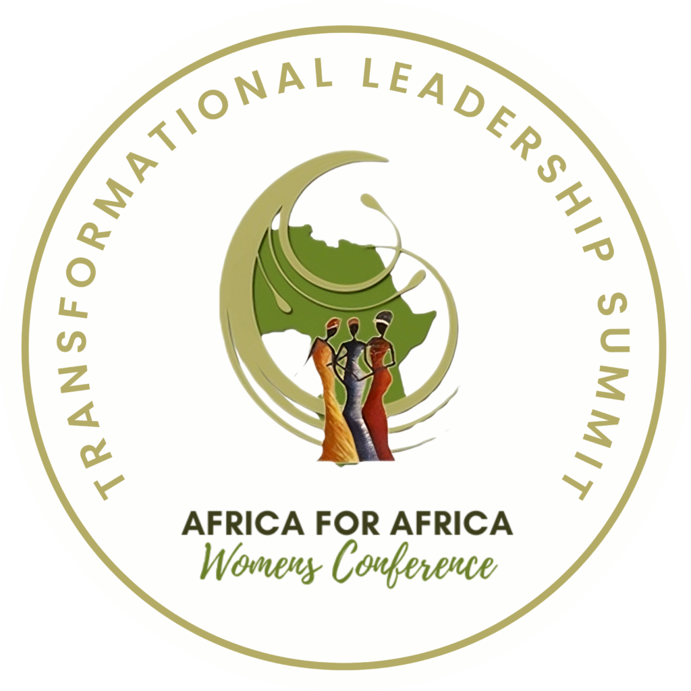

Insight
Deep cultural fluency combined with rigorous global standards.
We engineer connection. NJC Global operates at the critical intersection of high-tier African talent, impactful events, and authoritative media curation, translating visionary potential into global execution.
Our Genesis
NJC Global was born from a distinct observation: the African creative and business landscape possesses unparalleled vibrancy, yet frequently lacks the localized infrastructure to seamlessly integrate talent, narrative, and live execution on a global stage.
We are architects of access. We recognized that true impact isn't just about having the right people, hosting the right event, or telling the right story—it’s about the precise orchestration of all three. We exist to close the gap between ambition and reality for organizations navigating the Pan-African ecosystem.
Deep cultural fluency combined with rigorous global standards.
Flawless operational delivery across talent, events, and media.
Professional narratives and content that make valuable work easier to discover and trust.
A growing network linking African professionals and organizations to relevant opportunities.
The Nexus
Curating the narrative of African excellence.
Orchestrating high-impact global gatherings.
Sourcing and managing visionary leaders.

Leadership
As a Pan-African strategist, Joyce Chiamaka Nwezeh built NJC Global on the conviction that Africa's most profound asset is its human capital, and its most urgent need is frictionless platforms for that capital to perform on the global stage.
With extensive experience bridging continental markets, she has positioned NJC Global as a trusted advisory and execution partner for international entities seeking authentic, high-impact engagement within the African ecosystem. Her vision drives the firm's meticulous approach to talent curation and event architecture.
Connect on LinkedIn →To engineer seamless global execution for African talent and narratives, establishing robust platforms that drive measurable impact and cross-continental collaboration.
To be the premier architecture of connection, where Pan-African ambition meets global standards, transforming the way the world engages with the continent's excellence.
Our Partner Network
We collaborate with ambitious organizations whose ideas, reach, and expertise strengthen the Pan-African ecosystem.

Culture & trade · 01An African and diaspora platform promoting the continent's culture, history, innovation, trade, and global collaboration.

Business network · 02A virtual chapter connecting businesswomen in Zimbabwe with opportunities for enterprise, leadership, and cross-border collaboration.

Culture & commerce · 03A digital home for African and diaspora stories, history, literature, style, and products from across the continent.

Digital media · 04A digital entertainment platform created for discovering and enjoying exclusive premium video content from creators.

Women empowerment · 05A Pan-African initiative advancing women's leadership, economic empowerment, mentorship, and sustainable transformation.
Culture, trade, and diaspora engagement
The AfrikaFora is a platform committed to placing African people, ideas, culture, and enterprise at the centre of global conversations. Its work creates opportunities for Africans on the continent and throughout the diaspora to connect around shared history, innovation, trade, and community development.
Through events, cultural programming, and strategic conversations, the organization showcases African excellence while encouraging stronger relationships between Africa and its global partners.
Women in business and leadership
CBW Africa Zimbabwe Virtual Chapter brings businesswomen together through a flexible digital community designed for connection, leadership, and enterprise development. The chapter helps women build meaningful professional relationships while participating in a broader African business network.
Its virtual structure creates room for members across locations to exchange knowledge, discover opportunities, strengthen their visibility, and collaborate beyond national borders.
Culture, stories, and African commerce
Nia Nexus is a digital destination connecting audiences with African history, literature, fashion, food, ideas, and contemporary culture. Its editorial platform makes the continent's diverse stories accessible while celebrating the people and traditions behind them.
The platform also connects storytelling with commerce by introducing visitors to products and creative work from across Africa and the diaspora.
Premium digital entertainment
Renewberry is a digital entertainment platform focused on exclusive and premium video content. It gives audiences a dedicated place to discover creators, explore curated programming, and enjoy engaging video experiences.
Its creator-focused approach supports a growing digital content ecosystem while helping distinctive entertainment reach the audiences most interested in it.
Leadership and economic empowerment
Africa for Africa Women advances women's leadership and economic participation through Pan-African conversations, mentorship, collaboration, and empowerment initiatives. Its work brings together women and strategic partners committed to inclusive and sustainable transformation.
Through conferences and community-building activities, the initiative creates space for women to share experience, develop leadership capacity, and contribute to Africa's future.
Our partner team brings together strategists, storytellers, operators, community builders, and industry specialists. Together, we shape ideas into credible platforms, position the right voices, and deliver experiences designed to travel beyond borders.
Each collaboration is built around shared goals and clearly defined strengths. NJC Global leads the connective strategy while our partners contribute the specialist knowledge, audiences, and execution capacity required to produce meaningful, measurable outcomes.
Meet the team
A multidisciplinary team combining strategic insight, creative direction, and operational excellence across the Pan-African ecosystem.
Chioma develops cross-border partnerships and turns shared ambitions into focused, measurable programs.
Partnerships · Growth · AdvisoryTunde shapes thoughtful experiences that connect influential people, ideas, and opportunities across markets.
Events · Production · CommunityZainab positions exceptional African voices through purposeful storytelling, talent curation, and media strategy.
Media · Talent · StorytellingPartner with NJC Global to elevate your next Pan-African initiative, secure top-tier talent, or shape authoritative narratives.
Initiate Collaboration